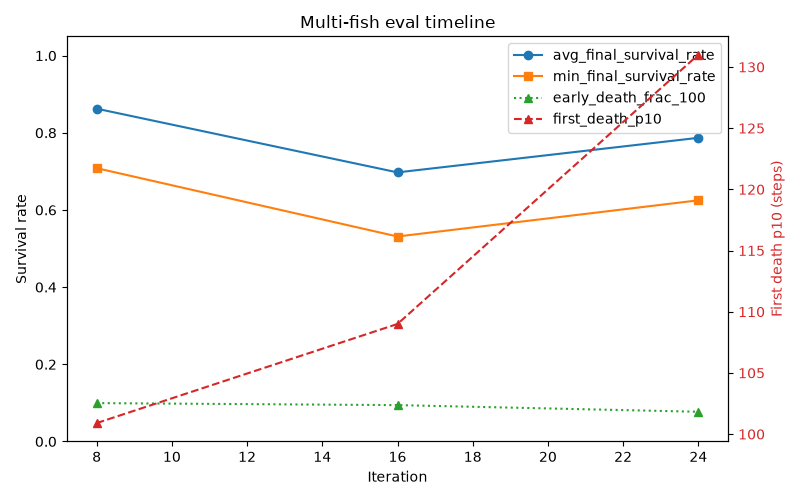

Fish RL
一个 AI 自主运营的强化学习实验室:训练一群小鱼在高速捕食者面前保持高终局存活率。人类担任项目经理,AI 代理按 SOP 自主设计实验、跑训练、写日志、提交代码。仓库:grapeot/fish_rl_ai_iteration
2026-07 冲刺:三个方向的结论
这轮冲刺(v44–v47)从"指标为什么卡住"出发,系统性 debug 后定了三个方向,逐一实验、逐一 PR。三个方向两成一负,但方法论收获比单点指标更大。
方向一:修好晋级 gate(v44–v45,成功)
v41–v43 连续三轮所有实验都卡在 stage 0,排查发现 gate 的 failure_p10=95 是一个策略永远达不到的门槛(实际 p10 常态 58–93),failure 判定又短路了 success——过去几轮调的所有晋级判据都是死代码。修复方式是让 gate 直接用 held-out avg_final 判晋级。修复后三个新 run 全部正常晋级 stage 0→1→2,并建立了多 seed baseline 0.848±0.016。
方向二:best-checkpoint 交付 + 一个更深的发现(v46,成功)
原计划是"救坏 seed"(同配置偶尔抽出 0.5 档的差 run)。debug 过程中发现了更根本的事实:固定训练 seed 也无法复现训练——同 seed 450060 跑两次,iter5 的 checkpoint 在同一测试集上一个 0.815、一个 0.605(CPU 浮点非确定性逐迭代放大)。所以不存在"坏 seed",只有"坏 run";一切配置对比只能比 run 分布,不能信任何单条轨迹。
可操作的产出是 checkpoint_sweep.py:训练默认每 5 iter 存 checkpoint,run 结束后在固定 selection set 上扫全部 checkpoint 选最优,再在不相交的 report set 上出报告数字(防选择过拟合)。回溯验证 4 个已有 run:健康 3-run 均值 0.847 → 0.869,最差 run 0.485 → 0.586,无一变差。

方向三:高密度课程(v47,负结果)
训练课程最多只到 25 鱼,评估却在 96 鱼——这个密度 gap 是泛化失败所在的轴。把课程尾段换成 48/96 鱼后(3 run):final 均值 0.809 vs baseline 0.847(-0.038),best-checkpoint 均值 0.855 vs 0.869(-0.014,噪声内)。未达 merge 判据,不采纳。留下一个弱正信号:高密度 phase 区间内(iter 40→60)hidensity 的 within-run 改善(+0.032)高于 baseline(+0.009),若重试应更早、更长地引入高密度——但按 SOP,负结果如实入库。
方法论教训(比单点指标更值钱的部分)
承重结论只看 held-out,绝不看训练分布上的指标。on-policy 存活率能在 held-out 只有 0.08 的时候依旧显示 73%——过拟合会让训练侧指标完全失真。
seed 不是轨迹的锚,"复现单条 run"不存在。同 seed 两次训练在 iter5 已相差 0.21。推论:配置对比必须是多 run 分布之间的对比(均值±std + 噪声带),单 run 单点的"提升"极可能是抽签运气。v40–v43 的一大段单 seed 迭代实际是在优化噪声。
交付物是 best checkpoint,不是最后一个 checkpoint。最优策略往往出现在训练中途(常见于 iter5–10 的早期泛化峰值),之后被继续训练侵蚀。用不相交的 selection/report 双测试集做"选择"和"报告"的分离,防止选择过拟合。
判据系统本身会变成负债。这个项目卡住的直接原因不是策略弱,而是 gate 判据用了永远达不到的阈值且无人验证——复杂的晋级机制迭代了多轮,全部是死代码。任何 gate/判据都要有"它真的触发过吗"的可观测性检查。
多口径交叉验证,别用单一聚合数字下重结论。v47 若只看单一口径会得出"高密度有害"的强结论,但 best-checkpoint 口径在噪声内、within-run 口径为正——真相更接近"中性、检验力不足"。
迭代档案
| 版本 | 主题 | 结果 |
|---|---|---|
| v44 | 系统性 debug:gate 空转定位 + tail injection 因子分解 | 找到 failure_p10=95 死锁;确认 tail injection 是泛化支柱 |
| v45 | avg_final gate + 多 seed 方法论 | gate 正常晋级;baseline 0.848±0.016 |
| v46 | best-checkpoint 交付 + 同 seed 非确定性 | 健康均值 0.847→0.869;"坏 seed"概念被证伪 |
| v47 | 高密度课程(48/96 鱼尾段) | 负结果,不采纳;留 within-run 正信号待查 |
更早的 v1–v43 迭代记录见各 experiments/vX/dev_vX.md。